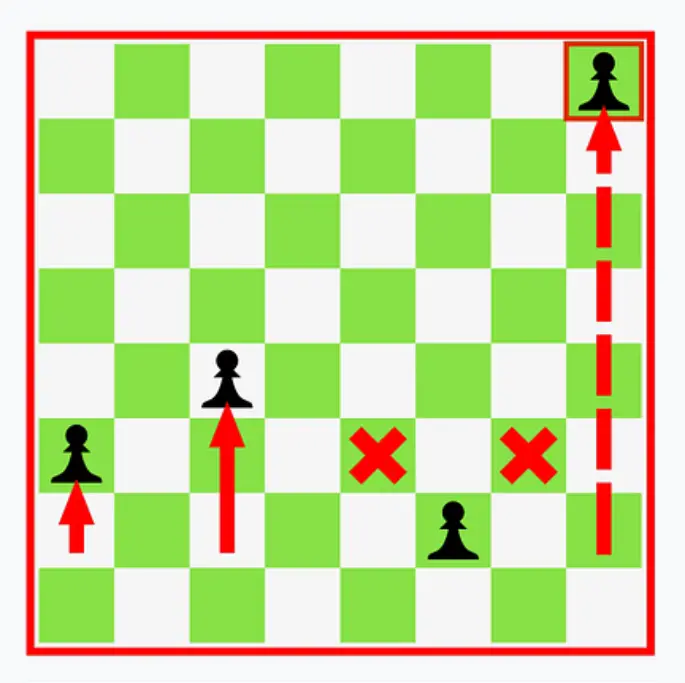
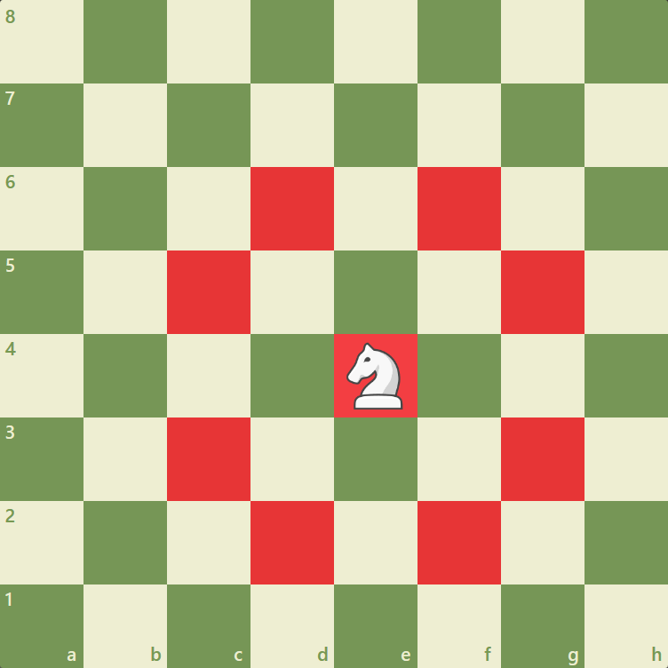

The pawn is the most basic piece. It is the easiest to develop, and most openings begin with moving a pawn forward (eg. e4). It moves one space up (can move two the first time it moves), and takes left and right diagonally.
The Pawn is worth one point, and can be promoted to any piece except the king if it reaches the end of the board.

The knight is a unique piece in the sense that it has the ability to "jump" over pieces. The knight moves and captures in an "L" direction. The knight is the only piece other than the pawn that can be developed on the first turn. It is worth 3 points.

The bishop moves and captures diagonally, and is generally worth more than a knight in an endgame scenario. It is worth 3 points.
The rook moves and captures horizontally and vertically. It is the most important piece in an endgame besides the king and queen. It is worth 5 points.

The Queen is the most important piece in chess, and it is recommended to save the queen for the endgame or a quick checkmate. It is worth 9 points.

Protect this piece at all costs. This is the weakest and most important piece, as you have only get one for the entire game. If your king is in check, you must move it, block it with another piece, or kill the piece that is delivering check.
If your opponent captures/checkmates your king, you lose the game. The king is worth the game. Because a king can never move into check, a king can not be captured by another king.

The pawn can also perform en-passant with 2 pawns, one of your pawns and one of the enemy pawns are needed. This can only happen on the 5th rank, and only if the enemy pawn moves 2 squares forwards.

The king and rook can castle if certain conditions are met. Check out this video below for more information!
The best way to get good at chess as a beginner is to play consistently. However, informative youtube videos/channels can help you achieve that goal faster by providing you with information.
A youtube channel that I would recommend watching is "Gotham Chess". His real name is Levy Rozman and makes informative chess videos.